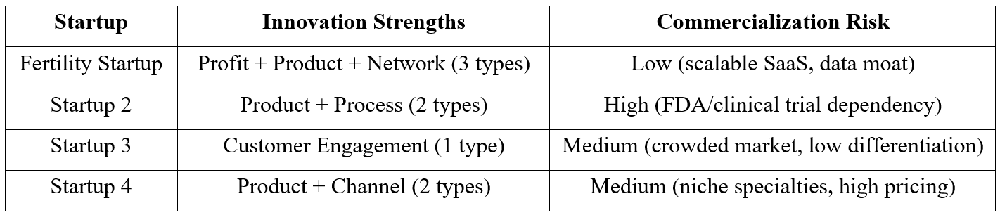

Disrupt or Die: A Multi-Framework Analysis
of HealthTech Startups
of HealthTech Startups
Tools Used
Business Model Canvas, Christensen's Disruption Theory, Jobs to Be
Done (JTBD), Doblin's 10 Types of Innovation, Actors in Health
Innovation
Introduction
The healthcare sector is undergoing a paradigm shift driven by
technological innovation, with startups emerging as key players in
addressing systemic inefficiencies.
This report evaluates four health tech startups: Fertility Startup, Startup 2, Startup 3, and Startup 4 (names removed for privacy) through the lens of strategic frameworks to assess their potential for scalable, sustainable disruption. The analysis applies Christensen’s Disruption Theory to identify market-creating innovations, Doblin’s 10 Types of Innovation to evaluate systemic differentiation, and Business Model Canvas (BMC) to stress-test commercial viability. By examining these startups across clinical impact, business model resilience, and ecosystem alignment, this report aims to determine which venture offers the highest potential for transformative impact and investor returns.
This report evaluates four health tech startups: Fertility Startup, Startup 2, Startup 3, and Startup 4 (names removed for privacy) through the lens of strategic frameworks to assess their potential for scalable, sustainable disruption. The analysis applies Christensen’s Disruption Theory to identify market-creating innovations, Doblin’s 10 Types of Innovation to evaluate systemic differentiation, and Business Model Canvas (BMC) to stress-test commercial viability. By examining these startups across clinical impact, business model resilience, and ecosystem alignment, this report aims to determine which venture offers the highest potential for transformative impact and investor returns.
Process and Methodology
Comparative Analysis of the Four Startups
Artifact 1: Christensen's 6-Question Test for Disruptive
Potential
Analysis of Christensen’s 6-Question Test Results:
The Christensen framework reveals a stark contrast in disruptive
potential among the startups. Fertility Startup emerges as the only
venture to pass all six tests decisively, validating its new-market
disruption thesis.
Key Insight: Fertility Startup’s alignment with Christensen’s principles, i.e. targeting nonconsumption, leveraging enabling technology, and pairing it with a disruptive business model, makes it the only startup capable of reshaping its market. Startup 2’s high-risk profile and the others’ sustaining nature underscore why disruption requires more than technological novelty; it demands strategic asymmetry against incumbents.
Key Insight: Fertility Startup’s alignment with Christensen’s principles, i.e. targeting nonconsumption, leveraging enabling technology, and pairing it with a disruptive business model, makes it the only startup capable of reshaping its market. Startup 2’s high-risk profile and the others’ sustaining nature underscore why disruption requires more than technological novelty; it demands strategic asymmetry against incumbents.
Artifact 2: Key Insights from Doblin's Framework

Recommendation: Fertility Startup’s systemic innovation
approach aligns with Doblin’s thesis that breakthrough solutions
combine profit, product, and ecosystem innovations. Other startups’
narrow focus on product alone limits scalability.
3. Selection of the startup to invest in
Fertility Startup’s dual disruption of Christensen-approved market creation and Doblin-style systemic innovation makes it uniquely positioned to transform IVF. The others innovate in isolated dimensions, capping their impact.
Fertility Startup’s dual disruption of Christensen-approved market creation and Doblin-style systemic innovation makes it uniquely positioned to transform IVF. The others innovate in isolated dimensions, capping their impact.
Artifact 3: Business Model Canvas Evaluation: Fertility Startup
This analysis confirms Fertility Startup has built a fundamentally
sound model with strong product-market fit, but must navigate
critical scaling challenges to convert its technological lead into
lasting market dominance. The coming 12-18 months will be pivotal
for transitioning from innovative disruptor to standard of care.
Artifact 4: Health Actors
Fertility Startup’s success hinges on aligning these actors’
incentives, a dynamic visualized in the Venn diagram below.
Regulatory approval, clinician trust, patient demand, and partner
ecosystems must converge to transform into a new standard of care.
Analysis
Fertility Startup operates in a high-stakes healthcare niche where
technological innovation must navigate complex ecosystem dynamics.
The company's AI-driven value proposition represents more than just
a product - it's a potential paradigm shift in fertility care.
However, as our actor analysis reveals, its ability to scale will be
determined by how effectively it manages interdependent stakeholder
relationships.
Conclusion
Fertility Startup stands at an inflection point where technological
leadership must be converted into ecosystem architecture. The next
18 months require:
1. Converting clinical traction into payer proof points.
2. Diversifying the data asset beyond Western populations.
3. Activating patient demand as an adoption accelerator
1. Converting clinical traction into payer proof points.
2. Diversifying the data asset beyond Western populations.
3. Activating patient demand as an adoption accelerator
Final Recommendation
Fertility Startup’s unique positioning
as both a disruptor and an ecosystem architect makes it the only
startup capable of transitioning from a niche tool to a new standard
of care in fertility diagnostics. Investors should prioritize this
opportunity, while monitoring risks tied to payer inertia and data
diversity.